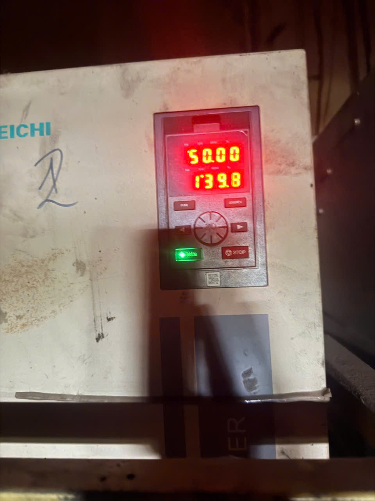
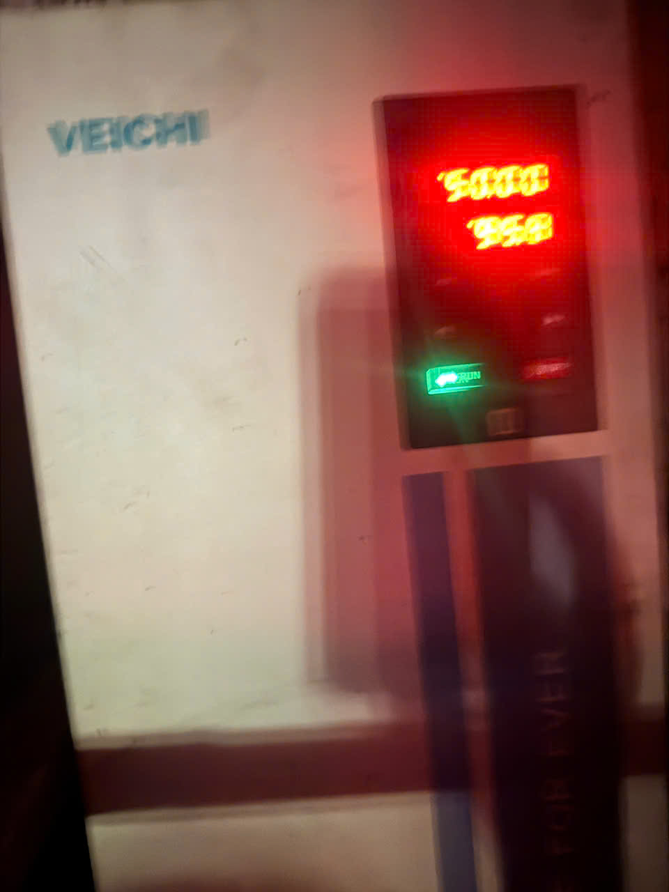
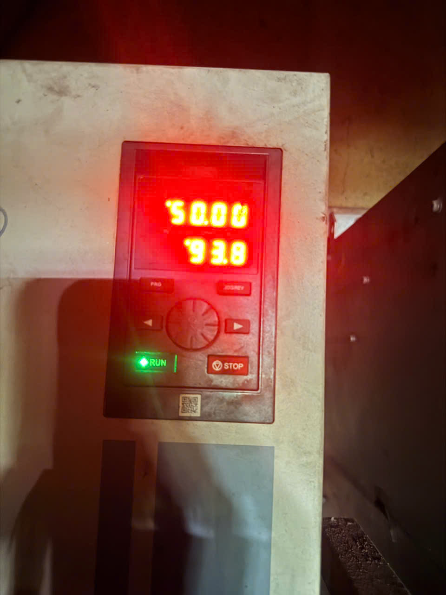

Bộ phận Cơ điện · Báo cáo kỹ thuật
Nhà máy Cao su Huy Anh
Ngày: 15/07/2026
Kết quả theo dõi & đo đạc: nhà máy bị sụt áp và quá tải máy biến áp (1.250 kVA, đang mang ~134% — ước tính). Báo cáo nêu nguyên nhân (mục Phát hiện) và giải pháp không tốn chi phí: ① hạ tốc 5 quạt lò Apron bằng biến tần → giảm kW thường trực; ② khởi động động cơ lớn lần lượt → chống nhảy điện lúc khởi động. Cụm quạt lò chạy 50 Hz ≈ 247 kW:
Hiện tại nhà máy đang chạy TẤT CẢ quạt ở 50 Hz (chưa hạ tần số). Theo dõi dòng điện thấy:
① Quạt F0 (Apron), F2 (Apron) và quạt F2 (cooling) — dòng ĐANG CAO hơn bình thường
| Quạt | Hiện tại 50Hz (đo thực) | Nếu hạ (Mức 2) | Giảm dòng |
|---|---|---|---|
| Quạt F2 Apron (90kW) | ~140 A | 37Hz → ~77 A | ~63 A |
| Quạt F0 Apron (55kW) | ~96 A | 40Hz → ~61 A | ~35 A |
| Quạt F2 cooling (55kW) | 94 A | giữ 50Hz (làm mát) | — |
Dòng sau khi hạ ≈ dòng đo × (Hz mới / 50)². Dòng cao bất thường ở các quạt trên → đề xuất kiểm tra cơ khí: vòng bi / bạc đạn, bụi bẩn bám cánh, gối đỡ quạt. Quạt cooling giữ 50Hz (làm mát) nhưng 94 A cũng cao — kiểm tra tương tự.



② Máy Crep 1 & Crep 4 ra tờ mủ DÀY → máy SHD tăng dòng
Tờ mủ ra từ Crep 1 và Crep 4 quá dày (to) khiến máy SHD phải "ăn" nặng → dòng (ampe) máy SHD tăng cao.
Giảm dòng điện tiêu thụ của cụm quạt lò Apron nhằm giảm tải cho máy biến áp (hiện đang vận hành vượt công suất định mức), qua đó hạn chế sụt áp và hiện tượng tự nhảy điện (MCCB) trong giờ cao điểm. Đây là biện pháp vận hành, tận dụng biến tần sẵn có, không phát sinh chi phí đầu tư.
Quạt ly tâm tuân theo định luật đồng dạng: công suất tỷ lệ với lập phương tốc độ.
P ∝ (f/50)³ I ∝ (f/50)²
Vì vậy chỉ cần hạ tần số biến tần một chút, công suất và dòng điện giảm rất mạnh, trong khi vẫn đủ lưu lượng gió cho quá trình sấy/cháy nếu chọn mức phù hợp. Riêng quạt làm mát (cooling) giữ 50 Hz để không ảnh hưởng khả năng làm mát.
| Chế độ | Tổng công suất | Dòng cấp (~A) |
Giảm so với 50Hz |
|---|---|---|---|
| 50 Hz (hiện tại) | 247 kW | ~419 A | — |
| Mức 1 (nhẹ) | 86,6 kW | ~147 A | −160 kW ~272 A |
| Mức 2 (vừa) ★ | 110,3 kW | ~187 A | −137 kW ~232 A |
| Mức 3 (cao) | 126,3 kW | ~214 A | −121 kW ~205 A |
★ Mức 2 = khuyến nghị bắt đầu. Dòng điện quy đổi theo lưới 3 pha 400V, cosφ ≈ 0,85 — ước tính, đối chiếu dòng đo thực ở mục 5.
Chi tiết Hz & kW từng quạt (cột "Định mức" = mức chạy hiện tại 50Hz)
| Thiết bị | Định mức (kW,50Hz) |
Mức 1 | Mức 2 | Mức 3 | |||
|---|---|---|---|---|---|---|---|
| Hz | kW | Hz | kW | Hz | kW | ||
| Apron (tốc độ sấy) | — | 14–16 | — | 18–20 | — | 22–25 | — |
| Quạt F0 | 45 | 35 | 15,4 | 40 | 23 | 40 | 23 |
| Quạt F1 | 90 | 35 | 30,9 | 37 | 36,5 | 40 | 46,1 |
| Quạt F2 | 45 | 37 | 18,2 | 40 | 23 | 40 | 23 |
| Quạt F3 | 45 | 37 | 18,2 | 40 | 23 | 42 | 26,7 |
| Quạt F4 | 22 | 28 | 3,9 | 30 | 4,8 | 35 | 7,5 |
| Tổng 5 quạt | 247 | — | 86,6 | — | 110,3 | — | 126,3 |
| Giảm tải (kW) | — | — | 160,4 | — | 136,7 | — | 120,7 |
| Giảm dòng (~A) | — | — | ~272 | — | ~232 | — | ~205 |
↔ Vuốt ngang. kW tự tính P = Định mức × (Hz/50)³; A theo 400V/cosφ 0,85.
Cơ điện điền khi vận hành thử.
| Ngày / Ca | Mức chạy | Tần số Apron (Hz) | Dòng đo I (A) | Nhiệt độ lò (°C) | Chất lượng mủ | Người theo dõi | Ghi chú |
|---|---|---|---|---|---|---|---|
| 15/07 – Ca 1 | Mức 2 | 18 | (đo) | (đo) | Đạt | — | — |
Ghi lại dòng đo thực để đối chiếu với công suất tính toán ở mục 3.
Mục này chống nhảy điện & sụt áp KHI KHỞI ĐỘNG — khác với giảm tải thường trực (mục 3–5). Không làm giảm mức 134% khi máy đã chạy ổn định.
Động cơ khởi động trực tiếp rút dòng gấp ≈ 6–8 lần dòng chạy bình thường (đến khi máy đủ tốc độ). Bật nhiều máy lớn cùng lúc → dòng đỉnh cộng dồn → sụt áp mạnh, nhảy MCCB. Nguy hiểm hơn: sụt áp làm contactor các máy đang chạy khác nhả ra → dừng loạt máy → nghẽn/kẹt mủ cả line. Vì vậy phải giãn cách khởi động.
3 nguyên tắc khởi động (theo thứ tự ưu tiên)
Động cơ công suất lớn cần giãn cách khởi động (≥ 45 kW)
| # | Động cơ | Công suất | Khu vực |
|---|---|---|---|
| 1 | Máy Mix ⚠️ (một mình) | 315 kW | Chế biến sau sấy |
| 2 | Máy SHD 2 | 200 kW | SHD / Crep |
| 3 | Máy SHD 1 | 160 kW | SHD / Crep |
| 4 | Máy CREP 2 (2×75) | 150 kW | SHD / Crep |
| 5 | Máy Slạp 1 | 110 kW | Line lọc |
| 6 | Máy CRE1 | 90 kW | Bể 4 |
| 7 | CREP 3 | 90 kW | SHD / Crep |
| 8 | CREP 4 | 90 kW | SHD / Crep |
| 9 | Dao Bay | 90 kW | Chế biến |
| 10 | Máy Slạp 2 | 55 kW | Slạp 2 |
| 11 | Máy Pre 1 | 45 kW | Bể 1 |
| 12 | Máy Pre 2 | 45 kW | Bể 4 |
| 13 | Bơm cốm 1 | 45 kW | SHD / Crep |
| 14 | Bơm cốm 2 | 45 kW | SHD / Crep |
Cột # xếp theo công suất (biết máy nào "nặng" nhất) — KHÔNG phải thứ tự bấm khởi động. Thứ tự bấm theo dòng công nghệ (nguyên tắc ①). Tổng 14 máy ≈ 1.530 kW.
Nhà máy đang quá tải máy biến áp (~134%) và sụt áp/nhảy điện khi khởi động máy lớn. Các việc cần làm — ưu tiên giải pháp 0 đồng trước:
A. Giảm tải thường trực
B. Chống sụt áp / nhảy điện khi khởi động
C. Xử lý điểm nóng cơ khí
D. Ngoài vận hành